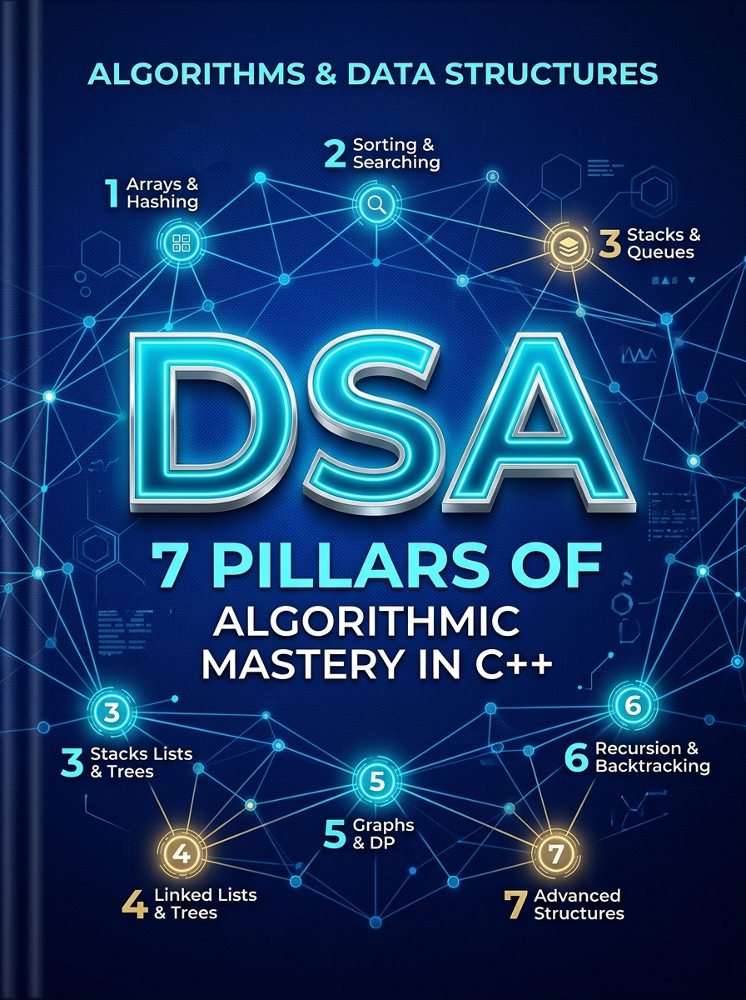

| Chapter | Title / Topic |
|---|---|
| Front Matter | About the Author & Publication Details |
| Module 00 | The 45-Minute Interview Mental Model |
| Module 01 | Complexity Analysis & The Decision Matrix |
| Module 02 | Two Pointers & Sliding Window Mastery |
| Module 03 | Prefix Sums & Difference Arrays |
| Module 04 | Fast Searching & Modified Binary Search |
| Module 05 | Monotonic Stack & Deque |
| Module 06 | Linked Lists - The Pointer Mechanics |
| Module 07 | Binary Trees & BST Patterns |
| Module 08 | Priority Queues & Heaps |
| Module 09 | Graph Traversal & Connectivity |
| Module 10 | Shortest Paths & Minimum Spanning Tree |
| Module 11 | Dynamic Programming - The Human Way |
| Module 12 | Backtracking & State Space Search |
| Module 13 | Bit Manipulation Hacks |
| Module 14 | 48-Hour Emergency Cheat Sheet |
"An interview is not a solo coding contest. It is a collaborative technical presentation where communication is graded just as harshly as your algorithmic correctness."
Most candidates fail coding interviews not because they couldn't write code, but because they mismanaged their time. Here is the exact time allocation used by candidates who receive FAANG offers:
[00:00 - 05:00] Clarification, Edge Cases & Constraints (Understand)
[05:00 - 12:00] Brainstorming & Solution Pitching (Match & Plan)
[12:00 - 30:00] Writing Clean, Modular C++ Code (Implement)
[30:00 - 38:00] Dry Run with Edge Cases & Bug Catching (Review)
[38:00 - 45:00] Complexity Analysis & Reverse Questions (Evaluate)
Whenever an interviewer hands you a problem statement, DO NOT START CODING IMMEDIATELY. Jumping straight to code is the single fastest way to receive a rejection.
Use the UMPIRE framework:
"A naive solution would take O(N^2) by checking all pairs. We can do better by caching intermediate states in an
unordered_mapto bring it down to O(N)."
"Does this approach sound good to you, or would you like me to explore another angle before I write the code?"
left, right, curr_sum instead of single letters like i, j, s).arr = [2, 7, 11, 15], target = 9).Step 1: left = 0 (val = 2), right = 3 (val = 15), sum = 17 > target -> right--
Step 2: left = 0 (val = 2), right = 2 (val = 11), sum = 13 > target -> right--
Step 3: left = 0 (val = 2), right = 1 (val = 7), sum = 9 == target -> match found!INT_MAX)."Time Complexity: O(N log N) due to sorting. Space Complexity: O(1) auxiliary memory since we modify pointers in-place."
Silence is an interview killer. Interviewers want to know how you think. If you hit a mental block, use these exact battle-tested phrases:
| Situation | Don't Say | Say This Instead |
|---|---|---|
| You have no clue where to start | "I don't know how to solve this." | "Let's start by walking through a concrete example step-by-step to detect patterns in how the output changes." |
| Your brute force is too slow | (Awkward 3-minute silence) | "The bottleneck right now is searching repeatedly in O(N). I'm wondering if pre-sorting or indexing with a hash table could turn those lookups into O(1)." |
| You spotted a bug in your code | "Oops, my code is broken." | "Looking at step 4, if the input is an empty array, this line will cause an out-of-bounds error. Let me add a guard condition at the top." |
Interviewers at top tech firms appreciate clean, modern C++ conventions:
// ❌ BAD: Copies the entire vector into memory (O(N) time and memory overhead)
int calculateSum(vector<int> nums) { ... }
// ✅ GOOD: Zero-copy, read-only
int calculateSum(const vector<int>& nums) { ... }
Whenever doing additions or multiplications of array elements, use long long:
// ❌ BAD: Can overflow when left + right > INT_MAX
int mid = (left + right) / 2;
// ✅ GOOD: Prevents overflow
int mid = left + (right - left) / 2;
// ✅ GOOD: Self-explanatory modularity
bool isValidState(int r, int c, int n, int m) {
return (r >= 0 && r < n && c >= 0 && c < m);
}
Ask yourself these 3 questions every time:
1. Did I ask about constraints on N?
2. Did I verify if the input can be empty or negative?
3. Did I verbally get the interviewer's nod before starting to code?
"The constraints given in the problem statement are not just rules—they are the biggest spoiler for what algorithm the interviewer expects you to write."
Modern coding platforms (LeetCode, Codeforces, HackerRank, InterviewBit) typically allow ≈ 10^8 operations per second in C++.
By looking at N (the size of the input), you can eliminate 90% of approaches in the first 30 seconds:
| Constraints (N) | Allowed Time Complexity | Expected Algorithm / Paradigm |
|---|---|---|
| N ≤ 10 | O(N!) or O(N^2 · 2^N) | Permutations, Travelling Salesman, Exhaustive Search |
| N ≤ 20 | O(2^N) | Subsets, Bitmask DP, Exponential Backtracking |
| N ≤ 100 | O(N^4) or O(N^3) | 2D/3D Dynamic Programming, Floyd-Warshall (O(V^3)) |
| N ≤ 500 | O(N^3) | Interval DP (e.g., Matrix Chain Multiplication) |
| N ≤ 5,000 | O(N^2) | Double nested loops, 2D Grid Traversal, Brute-force Pair checking |
| N ≤ 10^5 to 10^6 | O(N log N) or O(N) | Sorting, Binary Search, Sliding Window, Two Pointers, Monotonic Stack, BFS/DFS, Heaps, DSU |
| N ≥ 10^8 or 10^9 | O(log N) or O(1) | Binary Search on Answer, Bit Manipulation, Math formulas, Matrix Exponentiation |
💡 Interview Pro-Tip: If the interviewer gives you N = 10^5, immediately mention: "Since N = 10^5, an O(N^2) solution will result in Time Limit Exceeded (TLE). We must aim for an O(N) or O(N log N) algorithm." This instantly demonstrates seniority.
Memorize this table. Interviewers frequently ask about internal implementations:
| Container | Underlying Structure | Access | Search | Insertion | Deletion |
|---|---|---|---|---|---|
std::vector |
Dynamic Array | O(1) | O(N) | Amortized O(1) (End) O(N) (Middle/Front) |
O(1) (End) O(N) (Middle/Front) |
std::deque |
Chunked Array Map | O(1) | O(N) | O(1) (Front & End) | O(1) (Front & End) |
std::list |
Doubly Linked List | O(N) | O(N) | O(1) (Given iterator) | O(1) (Given iterator) |
std::set / std::map |
Red-Black Tree (Self-balancing BST) | N/A (Key lookup: O(log N)) | O(log N) | O(log N) | O(log N) |
std::unordered_set / unordered_map |
Hash Table with Buckets | N/A (Key lookup: Average O(1)) | Average O(1) Worst O(N) |
Average O(1) Worst O(N) |
Average O(1) Worst O(N) |
std::priority_queue |
Max Binary Heap | O(1) (top()) |
N/A | O(log N) (push()) |
O(log N) (pop()) |
// ❌ WRONG: Creates a new string copy on every iteration -> O(N^2) total time!
string s = "";
for (int i = 0; i < n; i++) {
s = s + 'a';
}
// ✅ CORRECT: In-place append in amortized O(1) -> O(N) total time
string s = "";
s.reserve(n); // Optional optimization
for (int i = 0; i < n; i++) {
s.push_back('a'); // or s += 'a';
}
std::vector::erase() inside a loopDeleting elements from the front or middle of a vector shifts all subsequent elements to the left, turning an O(N) loop into O(N^2).
- If you need front popping, use std::deque or maintain a read pointer index.
unordered_map Hash Collision DOS AttacksIn competitive platforms and strict test cases, anti-hash tests cause default std::hash to degrade to O(N^2). If you observe unexpected TLE with unordered_map, switch to std::map (guaranteed O(log N)) or a custom splitmix64 hash function.
C++ call stack typically has a limit around 8MB on standard machines:
- Recursion depth > 10^5 can trigger Segmentation Fault (SIGSEGV).
- If depth is large, convert recursive DFS to iterative DFS using std::stack.
Use this quick mental flowchart when reading a problem:
Is the input array sorted or can it be sorted?
│
├── YES ───► Searching target? ───────────────► Binary Search (O(log N))
│ ───► Finding pairs/triplets? ────────► Two Pointers (O(N))
│
└── NO ────► Asking for continuous subarray? ──► Sliding Window / Prefix Sum
───► Asking for Top K elements? ──────► Heap / Priority Queue
───► Next greater/smaller element? ───► Monotonic Stack
───► Shortest path (unweighted)? ────► BFS
───► Shortest path (weighted)? ──────► Dijkstra's Algorithm
───► Optimal choices / Subproblems? ─► Dynamic Programming
"When brute force requires nested loops to inspect subarrays or pairs, Two Pointers and Sliding Window reduce O(N^2) to O(N) by maintaining contiguous state dynamically."
#include <vector>
using namespace std;
void twoPointersOpposite(vector<int>& arr, int target) {
int left = 0;
int right = arr.size() - 1;
while (left < right) {
int current_sum = arr[left] + arr[right];
if (current_sum == target) {
// Process result (e.g., return {left, right})
left++;
right--;
} else if (current_sum < target) {
left++; // Need a larger value
} else {
right--; // Need a smaller value
}
}
}
// LeetCode 11: Container With Most Water
// Time: O(N), Space: O(1)
int maxArea(const vector<int>& height) {
int left = 0, right = height.size() - 1;
int max_water = 0;
while (left < right) {
int width = right - left;
int current_height = min(height[left], height[right]);
max_water = max(max_water, width * current_height);
// Always advance the pointer pointing to the shorter wall
if (height[left] < height[right]) {
left++;
} else {
right--;
}
}
return max_water;
}
struct ListNode {
int val;
ListNode *next;
ListNode(int x) : val(x), next(nullptr) {}
};
bool hasCycle(ListNode *head) {
if (!head || !head->next) return false;
ListNode *slow = head;
ListNode *fast = head;
while (fast != nullptr && fast->next != nullptr) {
slow = slow->next; // Moves 1 step
fast = fast->next->next; // Moves 2 steps
if (slow == fast) {
return true; // Cycle detected
}
}
return false; // Reached end of list
}
#include <vector>
#include <numeric>
#include <algorithm>
using namespace std;
int fixedSlidingWindow(const vector<int>& nums, int k) {
int n = nums.size();
if (n < k) return -1;
// 1. Compute first window
int window_sum = 0;
for (int i = 0; i < k; i++) {
window_sum += nums[i];
}
int max_sum = window_sum;
// 2. Slide window from index k to n - 1
for (int i = k; i < n; i++) {
window_sum += nums[i] - nums[i - k]; // Add incoming, remove outgoing
max_sum = max(max_sum, window_sum);
}
return max_sum;
}
#include <vector>
#include <string>
#include <unordered_map>
#include <algorithm>
using namespace std;
int variableSlidingWindow(const string& s) {
unordered_map<char, int> freq;
int left = 0;
int max_length = 0;
for (int right = 0; right < s.length(); right++) {
// Step 1: Expand window by including s[right]
freq[s[right]]++;
// Step 2: Contract window from left while condition is violated
while (/* window is invalid condition */ false) {
freq[s[left]]--;
if (freq[s[left]] == 0) {
freq.erase(s[left]);
}
left++; // Shrink window
}
// Step 3: Update answer with current valid window
max_length = max(max_length, right - left + 1);
}
return max_length;
}
// LeetCode 3: Longest Substring Without Repeating Characters
// Time: O(N), Space: O(min(N, alphabet_size))
#include <string>
#include <vector>
#include <algorithm>
using namespace std;
int lengthOfLongestSubstring(const string& s) {
// Array map for ASCII characters (faster than unordered_map)
vector<int> last_seen(256, -1);
int max_len = 0;
int left = 0;
for (int right = 0; right < s.length(); right++) {
char ch = s[right];
// If character seen within current window, jump left pointer
if (last_seen[ch] >= left) {
left = last_seen[ch] + 1;
}
last_seen[ch] = right;
max_len = max(max_len, right - left + 1);
}
return max_len;
}
vector<int> count(256, 0) instead of unordered_map if ASCII)."When a problem requires querying cumulative sums or performing repeated range updates on arrays, Prefix Sums and Difference Arrays reduce query and update times from O(N) down to an immediate O(1)."
A prefix sum array stores cumulative sums from index 0 to i:
$prefix[i] = Σ(j=0..i) arr[j]
Any contiguous range sum from index L to R can be answered in O(1) using:
Sum(L, R) = prefix[R] - prefix[L - 1]
In coding interviews, subtracting L - 1 when L = 0 causes negative index out-of-bounds checks (if (L == 0)).
To make your C++ code clean and bug-free, always allocate a (N + 1) sized array where prefix[0] = 0:
#include <vector>
using namespace std;
class PrefixSum1D {
private:
vector<long long> pref;
public:
PrefixSum1D(const vector<int>& nums) {
int n = nums.size();
pref.assign(n + 1, 0);
for (int i = 0; i < n; i++) {
pref[i + 1] = pref[i] + nums[i];
}
}
// Returns sum of nums[L...R] inclusive (0-indexed) in O(1)
long long query(int L, int R) {
return pref[R + 1] - pref[L];
}
};
When asked to compute the sum of any submatrix (r_1, c_1) to (r_2, c_2) repeatedly:
Pref[r][c] = Matrix[r-1][c-1] + Pref[r-1][c] + Pref[r][c-1] - Pref[r-1][c-1]
RegionSum = Pref[r_2+1][c_2+1] - Pref[r_1][c_2+1] - Pref[r_2+1][c_1] + Pref[r_1][c_1]
#include <vector>
using namespace std;
class MatrixRegionSum {
vector<vector<int>> pref;
public:
MatrixRegionSum(const vector<vector<int>>& matrix) {
if (matrix.empty() || matrix[0].empty()) return;
int rows = matrix.size();
int cols = matrix[0].size();
pref.assign(rows + 1, vector<int>(cols + 1, 0));
for (int r = 0; r < rows; r++) {
for (int c = 0; c < cols; c++) {
pref[r + 1][c + 1] = matrix[r][c]
+ pref[r][c + 1]
+ pref[r + 1][c]
- pref[r][c];
}
}
}
int sumRegion(int r1, int c1, int r2, int c2) {
return pref[r2 + 1][c2 + 1]
- pref[r1][c2 + 1]
- pref[r2 + 1][c1]
+ pref[r1][c1];
}
};
When an array contains negative numbers, sliding window FAILS because expanding/shrinking does not guarantee monotonic sums. You must use unordered_map with Prefix Sum.
Core Math: We need curr_sum - prev_sum = K ⟹ prev_sum = curr_sum - K.
We count how many times (curr_sum - K) occurred in the past.
#include <vector>
#include <unordered_map>
using namespace std;
int subarraySum(const vector<int>& nums, int k) {
unordered_map<int, int> prefix_freq;
// Base case: a prefix sum of 0 has occurred once before we start
prefix_freq[0] = 1;
int current_sum = 0;
int total_subarrays = 0;
for (int x : nums) {
current_sum += x;
int needed = current_sum - k;
if (prefix_freq.find(needed) != prefix_freq.end()) {
total_subarrays += prefix_freq[needed];
}
prefix_freq[current_sum]++;
}
return total_subarrays;
}
Given an array initialized to 0, you receive Q queries: "Add value V to all elements from index L to R".
- Naive loop takes O(Q × N) → TLE.
- Difference Array does each update in O(1), and reconstructs the array in O(N) at the end.
#include <vector>
using namespace std;
vector<int> applyRangeUpdates(int n, const vector<vector<int>>& updates) {
// updates[i] = {L, R, val}
vector<int> diff(n + 1, 0);
// Step 1: Record boundaries in O(1)
for (const auto& u : updates) {
int L = u[0];
int R = u[1];
int val = u[2];
diff[L] += val;
if (R + 1 < n) {
diff[R + 1] -= val;
}
}
// Step 2: Accumulate prefix sum to build final array in O(N)
vector<int> result(n, 0);
int running_val = 0;
for (int i = 0; i < n; i++) {
running_val += diff[i];
result[i] = running_val;
}
return result;
}
long long instead of int.prefix % K:cpp
int mod = (current_sum % k + k) % k; // Guarantees positive modulo in C++prefix_freq[0] = 1; when counting subarrays with hash maps. Without it, subarrays starting at index 0 will be missed!"Binary Search is not limited to finding elements in sorted arrays. Its real superpower is finding the optimal boundary in any monotonic True/False search space in O(log N)."
The most common bug in coding interviews is an infinite loop caused by boundary off-by-one errors (mid - 1 vs mid + 1).
Here is the universally reliable Inclusive Bounds Template ([left, right]):
#include <vector>
using namespace std;
int binarySearch(const vector<int>& nums, int target) {
int left = 0;
int right = nums.size() - 1;
while (left <= right) {
// Prevents overflow compared to (left + right) / 2
int mid = left + (right - left) / 2;
if (nums[mid] == target) {
return mid; // Target found
} else if (nums[mid] < target) {
left = mid + 1; // Discard left half
} else {
right = mid - 1; // Discard right half
}
}
return -1; // Target does not exist
}
Top tech interviewers often ask: "Implement std::lower_bound without using the STL function."
nums[i] >= targetint lowerBound(const vector<int>& nums, int target) {
int left = 0, right = nums.size() - 1;
int ans = nums.size(); // Default if all elements are < target
while (left <= right) {
int mid = left + (right - left) / 2;
if (nums[mid] >= target) {
ans = mid; // Candidate found, look for earlier match
right = mid - 1;
} else {
left = mid + 1;
}
}
return ans;
}
nums[i] > targetint upperBound(const vector<int>& nums, int target) {
int left = 0, right = nums.size() - 1;
int ans = nums.size();
while (left <= right) {
int mid = left + (right - left) / 2;
if (nums[mid] > target) {
ans = mid;
right = mid - 1;
} else {
left = mid + 1;
}
}
return ans;
}
Feasibility: [ False, False, False, True, True, True, True ]
▲
Optimal Answer
#include <vector>
#include <numeric>
#include <algorithm>
using namespace std;
// Step 1: Write the feasibility tester
bool isFeasible(const vector<int>& weights, int days, int capacity) {
int days_needed = 1;
int current_load = 0;
for (int w : weights) {
if (w > capacity) return false;
if (current_load + w > capacity) {
days_needed++;
current_load = 0;
}
current_load += w;
}
return days_needed <= days;
}
// Step 2: Binary search on the capacity range
int shipWithinDays(const vector<int>& weights, int days) {
int left = *max_element(weights.begin(), weights.end());
int right = accumulate(weights.begin(), weights.end(), 0);
int optimal_capacity = right;
while (left <= right) {
int mid = left + (right - left) / 2;
if (isFeasible(weights, days, mid)) {
optimal_capacity = mid; // Try smaller capacity
right = mid - 1;
} else {
left = mid + 1; // Must increase capacity
}
}
return optimal_capacity;
}
In a rotated sorted array, at least one half (left or right) is ALWAYS strictly sorted.
Check which half is sorted, and test if the target falls within that sorted half's range.
// LeetCode 33: Search in Rotated Sorted Array
// Time: O(log N), Space: O(1)
int searchRotated(const vector<int>& nums, int target) {
int left = 0, right = nums.size() - 1;
while (left <= right) {
int mid = left + (right - left) / 2;
if (nums[mid] == target) return mid;
// Check if Left Half is sorted
if (nums[left] <= nums[mid]) {
if (target >= nums[left] && target < nums[mid]) {
right = mid - 1; // Target lies in sorted left half
} else {
left = mid + 1;
}
}
// Otherwise, Right Half must be sorted
else {
if (target > nums[mid] && target <= nums[right]) {
left = mid + 1; // Target lies in sorted right half
} else {
right = mid - 1;
}
}
}
return -1;
}
left and right based on physical limits of the answer.while (left <= right).ans saved inside if (feasible) branch."A Monotonic Stack maintains elements in strictly increasing or decreasing order. It is the definitive technique for finding the Next/Previous Greater/Smaller element in O(N) amortized time instead of O(N^2)."
A standard stack allows O(1) push and pop. A Monotonic Stack adds a single invariant:
- Monotonic Decreasing: Values decrease from bottom to top (e.g., [10, 7, 5, 2]). When a larger element arrives, smaller elements are popped.
- Monotonic Increasing: Values increase from bottom to top (e.g., [2, 5, 7, 10]). When a smaller element arrives, larger elements are popped.
⚡ Amortized O(N) Complexity: Each element is pushed onto the stack exactly once and popped at most once across the entire loop.
For each element in an array, find the first element to its right that has a strictly greater value. If none exists, return -1.
#include <vector>
#include <stack>
using namespace std;
vector<int> nextGreaterElement(const vector<int>& nums) {
int n = nums.size();
vector<int> result(n, -1);
stack<int> st; // Stores indices
for (int i = 0; i < n; i++) {
// While current element is greater than element at top of stack
while (!st.empty() && nums[i] > nums[st.top()]) {
int prev_idx = st.top();
st.pop();
result[prev_idx] = nums[i]; // Found next greater element
}
st.push(i); // Push current index
}
return result;
}
Given temperatures array, return an array of how many days you have to wait until a warmer temperature.
// Time: O(N), Space: O(N)
vector<int> dailyTemperatures(const vector<int>& temperatures) {
int n = temperatures.size();
vector<int> answer(n, 0);
stack<int> st; // Indices
for (int i = 0; i < n; i++) {
while (!st.empty() && temperatures[i] > temperatures[st.top()]) {
int prev_index = st.top();
st.pop();
answer[prev_index] = i - prev_index; // Distance in days
}
st.push(i);
}
return answer;
}
For each bar at index i, the maximum rectangle containing this bar extends to the left until we hit a bar shorter than heights[i], and extends to the right until we hit a bar shorter than heights[i].
Using a monotonic increasing stack, we compute both boundaries in a single pass.
// Time: O(N), Space: O(N)
int largestRectangleArea(const vector<int>& heights) {
int n = heights.size();
stack<int> st; // Stores indices of increasing heights
int max_area = 0;
for (int i = 0; i <= n; i++) {
// Use a dummy height of 0 at index n to flush out all remaining bars in the stack
int current_height = (i == n) ? 0 : heights[i];
while (!st.empty() && current_height < heights[st.top()]) {
int h = heights[st.top()];
st.pop();
// Width calculation:
// If stack is empty, width stretches from index 0 to i - 1 (width = i)
// Otherwise, width is between current i and new stack top (width = i - st.top() - 1)
int width = st.empty() ? i : (i - st.top() - 1);
max_area = max(max_area, h * width);
}
st.push(i);
}
return max_area;
}
Given array nums and window size k, find the maximum element in each sliding window.
- Using a heap: O(N log K).
- Using a Monotonic Deque: Strictly O(N).
#include <vector>
#include <deque>
using namespace std;
vector<int> maxSlidingWindow(const vector<int>& nums, int k) {
deque<int> dq; // Stores indices in decreasing order of their values
vector<int> result;
for (int i = 0; i < nums.size(); i++) {
// 1. Remove indices that fell outside the current window [i - k + 1, i]
if (!dq.empty() && dq.front() <= i - k) {
dq.pop_front();
}
// 2. Remove smaller elements from back (they can never be the max)
while (!dq.empty() && nums[dq.back()] <= nums[i]) {
dq.pop_back();
}
// 3. Add current index
dq.push_back(i);
// 4. Record answer once the first valid window of size k is formed
if (i >= k - 1) {
result.push_back(nums[dq.front()]);
}
}
return result;
}
i, you can access both the value (nums[i]) and calculate distances (i - prev_idx).0 or negative infinity at the end of the array cleanly flushes remaining elements from the stack without writing duplicate cleanup loops."Linked List problems are rarely about complex math. They test pointer discipline, edge-case management, and your ability to avoid segmentation faults without allocating unnecessary memory."
90% of bugs in Linked List interview rounds come from handling operations at the head (e.g., deleting the first node or merging into an empty list).
Create a temporary stack-allocated dummy node whose .next points to head. Always return dummy.next:
struct ListNode {
int val;
ListNode *next;
ListNode(int x) : val(x), next(nullptr) {}
};
// Example: Remove elements with target value
ListNode* removeElements(ListNode* head, int val) {
ListNode dummy(0); // Stack allocated - zero memory leak
dummy.next = head;
ListNode* curr = &dummy;
while (curr->next != nullptr) {
if (curr->next->val == val) {
ListNode* temp = curr->next;
curr->next = curr->next->next;
delete temp; // Clean memory management in C++
} else {
curr = curr->next;
}
}
return dummy.next;
}
Remember the mantra: next_node -> curr->next -> prev -> curr.
// Time: O(N), Space: O(1)
ListNode* reverseList(ListNode* head) {
ListNode* prev = nullptr;
ListNode* curr = head;
while (curr != nullptr) {
ListNode* next_node = curr->next; // 1. Save next pointer
curr->next = prev; // 2. Reverse link
prev = curr; // 3. Move prev forward
curr = next_node; // 4. Move curr forward
}
return prev; // New head of reversed list
}
Given a linked list, reverse the nodes of a list k at a time, leaving leftover nodes unchanged.
// Time: O(N), Space: O(1)
ListNode* reverseKGroup(ListNode* head, int k) {
// 1. Check if there are at least k nodes remaining
ListNode* check = head;
for (int i = 0; i < k; i++) {
if (!check) return head; // Less than k nodes, keep as is
check = check->next;
}
// 2. Reverse first k nodes
ListNode* prev = nullptr;
ListNode* curr = head;
for (int i = 0; i < k; i++) {
ListNode* next_node = curr->next;
curr->next = prev;
prev = curr;
curr = next_node;
}
// 3. Recursively reverse the remaining list and connect
head->next = reverseKGroup(curr, k);
return prev;
}
priority_queue)Instead of merging one by one in O(K × N) or comparing all K nodes in O(K), store the current front node of each of the K lists in a min-heap.
- Time Complexity: O(N log K), where N is total nodes.
#include <queue>
#include <vector>
using namespace std;
ListNode* mergeKLists(vector<ListNode*>& lists) {
// Min-heap comparing ListNode values
auto compare = [](ListNode* a, ListNode* b) {
return a->val > b->val;
};
priority_queue<ListNode*, vector<ListNode*>, decltype(compare)> min_heap(compare);
// Push head of each non-empty list
for (ListNode* node : lists) {
if (node != nullptr) {
min_heap.push(node);
}
}
ListNode dummy(0);
ListNode* tail = &dummy;
while (!min_heap.empty()) {
ListNode* smallest = min_heap.top();
min_heap.pop();
tail->next = smallest;
tail = tail->next;
if (smallest->next != nullptr) {
min_heap.push(smallest->next);
}
}
return dummy.next;
}
head to cycle start = Distance from intersection point to cycle start!head, keep the other at meeting point. Advance both by 1 step until they meet.ListNode *detectCycle(ListNode *head) {
if (!head || !head->next) return nullptr;
ListNode *slow = head, *fast = head;
bool has_cycle = false;
while (fast && fast->next) {
slow = slow->next;
fast = fast->next->next;
if (slow == fast) {
has_cycle = true;
break;
}
}
if (!has_cycle) return nullptr;
// Reset slow to head, advance both by 1 step
slow = head;
while (slow != fast) {
slow = slow->next;
fast = fast->next;
}
return slow; // Start node of cycle
}
"Every tree algorithm is either a Top-Down decision (passing parameters to children) or a Bottom-Up synthesis (aggregating results returned by children)."
Top-Down (Pre-order / Downward) Bottom-Up (Post-order / Bubbling Up)
Parent passes limits/state Children return sub-answers
[ Root ] [ Root ]
/ \ ▲ ▲
Pass down Pass down Merge left & right results
Essential for problems involving level-by-level processing, zig-zag traversals, or finding the right-side view.
#include <vector>
#include <queue>
using namespace std;
struct TreeNode {
int val;
TreeNode *left;
TreeNode *right;
TreeNode(int x) : val(x), left(nullptr), right(nullptr) {}
};
vector<vector<int>> levelOrder(TreeNode* root) {
vector<vector<int>> levels;
if (!root) return levels;
queue<TreeNode*> q;
q.push(root);
while (!q.empty()) {
int level_size = q.size(); // Freeze current level count
vector<int> current_level;
for (int i = 0; i < level_size; i++) {
TreeNode* curr = q.front();
q.pop();
current_level.push_back(curr->val);
if (curr->left) q.push(curr->left);
if (curr->right) q.push(curr->right);
}
levels.push_back(current_level);
}
return levels;
}
// Time: O(N), Space: O(H) recursion stack
TreeNode* lowestCommonAncestor(TreeNode* root, TreeNode* p, TreeNode* q) {
if (!root || root == p || root == q) {
return root;
}
TreeNode* left = lowestCommonAncestor(root->left, p, q);
TreeNode* right = lowestCommonAncestor(root->right, p, q);
// If both left and right returned non-null, root is the LCA!
if (left && right) return root;
// Otherwise, return whichever child found a target
return left ? left : right;
}
TreeNode* lowestCommonAncestorBST(TreeNode* root, TreeNode* p, TreeNode* q) {
while (root) {
if (p->val < root->val && q->val < root->val) {
root = root->left; // Both targets in left subtree
} else if (p->val > root->val && q->val > root->val) {
root = root->right; // Both targets in right subtree
} else {
return root; // Split point or matched root
}
}
return nullptr;
}
Any path can curve through at most one peak node. We calculate max downward contribution of subtrees while updating global path at each node:
#include <algorithm>
#include <climits>
using namespace std;
class SolutionMaxPath {
int global_max = INT_MIN;
int maxGain(TreeNode* node) {
if (!node) return 0;
// Ignore negative paths by taking max with 0
int left_gain = max(0, maxGain(node->left));
int right_gain = max(0, maxGain(node->right));
// Path sum with current node as the highest ancestor
int current_path = node->val + left_gain + right_gain;
global_max = max(global_max, current_path);
// Return max one-sided path to parent
return node->val + max(left_gain, right_gain);
}
public:
int maxPathSum(TreeNode* root) {
maxGain(root);
return global_max;
}
};
A common mistake is checking only root->left->val < root->val. In reality, every node in the left subtree must be less than the root.
bool isValidBSTHelper(TreeNode* root, long long min_val, long long max_val) {
if (!root) return true;
if (root->val <= min_val || root->val >= max_val) {
return false;
}
return isValidBSTHelper(root->left, min_val, root->val) &&
isValidBSTHelper(root->right, root->val, max_val);
}
bool isValidBST(TreeNode* root) {
return isValidBSTHelper(root, LLONG_MIN, LLONG_MAX);
}
root == nullptr)?"When a problem asks for Top K elements, dynamic running medians, or greedy task scheduling, a Heap provides O(log K) updates instead of sorting the whole collection repeatedly in O(N log N)."
std::priority_queue FundamentalsBy default, C++ creates a Max-Heap:
#include <queue>
using namespace std;
priority_queue<int> max_heap; // Largest element at top()
// Min-Heap (Smallest element at top())
priority_queue<int, vector<int>, greater<int>> min_heap;
In interviews, you will frequently need to store complex objects (e.g., pairs of {freq, value}):
// Method A: Custom Functor struct
struct ComparePairs {
bool operator()(const pair<int, int>& a, const pair<int, int>& b) {
// Return true if 'a' has LOWER priority than 'b' (min-heap logic)
return a.first > b.first;
}
};
priority_queue<pair<int, int>, vector<pair<int, int>>, ComparePairs> custom_pq;
// Method B: Modern C++ Lambda Comparator
auto cmp = [](const pair<int, int>& a, const pair<int, int>& b) {
return a.first > b.first;
};
priority_queue<pair<int, int>, vector<pair<int, int>>, decltype(cmp)> lambda_pq(cmp);
Why? When the heap exceeds size K, popping from a Min-Heap discards the smallest of the top candidates, guaranteeing that only the K largest survive.
#include <vector>
#include <unordered_map>
#include <queue>
using namespace std;
// Time: O(N log K), Space: O(N)
vector<int> topKFrequent(const vector<int>& nums, int k) {
unordered_map<int, int> count_map;
for (int x : nums) count_map[x]++;
// Min-heap storing {frequency, number}
priority_queue<pair<int, int>, vector<pair<int, int>>, greater<pair<int, int>>> min_heap;
for (const auto& [num, freq] : count_map) {
min_heap.push({freq, num});
if (min_heap.size() > k) {
min_heap.pop(); // Evict smallest frequency
}
}
vector<int> result;
while (!min_heap.empty()) {
result.push_back(min_heap.top().second);
min_heap.pop();
}
return result;
}
Design a data structure that supports adding numbers and finding the running median in O(1) time.
Divide the stream into two balanced halves:
- max_heap_lower: Stores the smaller half of numbers (its top is the max of the small half).
- min_heap_upper: Stores the larger half of numbers (its top is the min of the large half).
[ Lower Half (Max-Heap) ] <= [ Upper Half (Min-Heap) ]
top() = max top() = min
class MedianFinder {
priority_queue<int> max_lower; // Stores small half
priority_queue<int, vector<int>, greater<int>> min_upper; // Stores large half
public:
void addNum(int num) {
// Step 1: Add to lower heap
max_lower.push(num);
// Step 2: Ensure order invariant (max of lower <= min of upper)
min_upper.push(max_lower.top());
max_lower.pop();
// Step 3: Ensure size invariant (lower heap can have at most 1 extra element)
if (max_lower.size() < min_upper.size()) {
max_lower.push(min_upper.top());
min_upper.pop();
}
}
double findMedian() {
if (max_lower.size() > min_upper.size()) {
return max_lower.top();
}
return (max_lower.top() + min_upper.top()) / 2.0;
}
};
addNum Time: O(log N)findMedian Time: O(1)Given an array of meeting time intervals [[s1, e1], [s2, e2], ...], find the minimum number of conference rooms required.
#include <algorithm>
#include <vector>
#include <queue>
using namespace std;
int minMeetingRooms(vector<vector<int>>& intervals) {
if (intervals.empty()) return 0;
// 1. Sort intervals by start time
sort(intervals.begin(), intervals.end(), [](const vector<int>& a, const vector<int>& b) {
return a[0] < b[0];
});
// 2. Min-heap storing end times of currently active meetings
priority_queue<int, vector<int>, greater<int>> min_end_times;
for (const auto& meeting : intervals) {
int start = meeting[0];
int end = meeting[1];
// If an earlier meeting has finished before current start, reuse that room
if (!min_end_times.empty() && min_end_times.top() <= start) {
min_end_times.pop();
}
min_end_times.push(end);
}
return min_end_times.size(); // Total active rooms needed
}
"Graphs model relationships. The trick to acing graph interview rounds is having clean, reusable boilerplate templates for BFS, DFS, Topological Sorting, and Union-Find."
In coding interviews, avoid raw pointers and linked lists for graphs. Always use an Adjacency List using vector<vector<int>>:
#include <vector>
using namespace std;
// Unweighted directed/undirected graph with V vertices
int V = 5;
vector<vector<int>> adj(V);
// Add edge u -> v
adj[u].push_back(v);
// If undirected, also add v -> u
adj[v].push_back(u);
// Weighted graph: vector<vector<pair<int, int>>> adj (stores {neighbor, weight})
Direction arrays (dr, dc) make 4-directional grid traversal clean and bug-free:
// Time: O(M * N), Space: O(M * N)
void dfsGrid(vector<vector<char>>& grid, int r, int c) {
int rows = grid.size();
int cols = grid[0].size();
// Out of bounds or water
if (r < 0 || r >= rows || c < 0 || c >= cols || grid[r][c] != '1') {
return;
}
grid[r][c] = '0'; // Sink island in-place to avoid separate visited set
const int dr[4] = {-1, 1, 0, 0};
const int dc[4] = {0, 0, -1, 1};
for (int i = 0; i < 4; i++) {
dfsGrid(grid, r + dr[i], c + dc[i]);
}
}
int numIslands(vector<vector<char>>& grid) {
if (grid.empty()) return 0;
int islands = 0;
for (int r = 0; r < grid.size(); r++) {
for (int c = 0; c < grid[0].size(); c++) {
if (grid[r][c] == '1') {
islands++;
dfsGrid(grid, r, c);
}
}
}
return islands;
}
In directed graphs, tracking simple visited[u] is insufficient. You must detect Back-Edges (visiting a node currently in the active recursion stack).
// States: 0 = Unvisited, 1 = Visiting (in recursion stack), 2 = Fully Visited
bool hasCycleDirected(int u, const vector<vector<int>>& adj, vector<int>& state) {
state[u] = 1; // Mark as visiting
for (int v : adj[u]) {
if (state[v] == 1) {
return true; // Cycle found! Reached a node in current recursion path
}
if (state[v] == 0 && hasCycleDirected(v, adj, state)) {
return true;
}
}
state[u] = 2; // Mark fully processed
return false;
}
Prerequisite ordering (e.g., Course Schedule), build order, task dependencies in DAGs (Directed Acyclic Graphs).
#include <vector>
#include <queue>
using namespace std;
// LeetCode 210: Course Schedule II
vector<int> findOrder(int numCourses, const vector<vector<int>>& prerequisites) {
vector<vector<int>> adj(numCourses);
vector<int> in_degree(numCourses, 0);
for (const auto& pre : prerequisites) {
int course = pre[0];
int dependency = pre[1];
adj[dependency].push_back(course);
in_degree[course]++;
}
queue<int> q;
for (int i = 0; i < numCourses; i++) {
if (in_degree[i] == 0) q.push(i);
}
vector<int> order;
while (!q.empty()) {
int u = q.front();
q.pop();
order.push_back(u);
for (int v : adj[u]) {
in_degree[v]--;
if (in_degree[v] == 0) {
q.push(v);
}
}
}
// If order does not contain all courses, graph has a cycle!
return (order.size() == numCourses) ? order : vector<int>();
}
DSU achieves almost O(1) amortized operations (O(\alpha(N)) via the Inverse Ackermann function) using two optimizations: Path Compression and Union by Rank/Size.
#include <vector>
#include <numeric>
using namespace std;
class DisjointSetUnion {
vector<int> parent;
vector<int> rank;
public:
DisjointSetUnion(int n) {
parent.resize(n);
iota(parent.begin(), parent.end(), 0); // parent[i] = i
rank.assign(n, 0);
}
// Find with Path Compression
int find(int i) {
if (parent[i] == i)
return i;
return parent[i] = find(parent[i]);
}
// Union by Rank. Returns false if already in the same set (cycle detected)
bool unite(int i, int j) {
int root_i = find(i);
int root_j = find(j);
if (root_i == root_j) return false; // Cycle detected
if (rank[root_i] < rank[root_j]) {
parent[root_i] = root_j;
} else if (rank[root_i] > rank[root_j]) {
parent[root_j] = root_i;
} else {
parent[root_j] = root_i;
rank[root_i]++;
}
return true;
}
};
"Choose the right tool for the right graph: Unweighted → BFS; Non-negative weighted → Dijkstra; Negative edges → Bellman-Ford; All-Pairs → Floyd-Warshall."
| Algorithm | Edge Weights | Single Source / All Pairs | Time Complexity | When to Use in Interviews |
|---|---|---|---|---|
| BFS | Unweighted (W = 1) | Single Source | O(V + E) | Grid mazes, minimum moves, word ladder |
| Dijkstra | Non-negative (W ≥ 0) | Single Source | O((V + E) log V) | Network delay, road networks |
| Bellman-Ford | Can have negative edges | Single Source | O(V · E) | Detecting negative weight cycles |
| Floyd-Warshall | Arbitrary (N ≤ 400) | All-Pairs | O(V^3) | Dense graphs, transitive closure |
| Kruskal (MST) | Undirected, weighted | Min Spanning Tree | O(E log E) | Connect all points with minimum wire/cost |
Find shortest time for signal to reach all nodes from source K.
#include <vector>
#include <queue>
#include <climits>
#include <algorithm>
using namespace std;
// Returns shortest distances from source 'src' to all nodes (0-indexed)
vector<int> dijkstra(int n, int src, const vector<vector<pair<int, int>>>& adj) {
// dist[i] = shortest known distance from src to i
vector<int> dist(n, INT_MAX);
dist[src] = 0;
// Min-heap storing {distance, node}
priority_queue<pair<int, int>, vector<pair<int, int>>, greater<pair<int, int>>> min_heap;
min_heap.push({0, src});
while (!min_heap.empty()) {
auto [d, u] = min_heap.top();
min_heap.pop();
// Stale distance check (skip outdated heap entries)
if (d > dist[u]) continue;
for (const auto& [v, weight] : adj[u]) {
if (dist[u] + weight < dist[v]) {
dist[v] = dist[u] + weight;
min_heap.push({dist[v], v});
}
}
}
return dist;
}
#include <vector>
#include <numeric>
#include <algorithm>
using namespace std;
struct Edge {
int u, v, weight;
bool operator<(const Edge& other) const {
return weight < other.weight;
}
};
class DSU {
vector<int> parent;
public:
DSU(int n) {
parent.resize(n);
iota(parent.begin(), parent.end(), 0);
}
int find(int i) {
return parent[i] == i ? i : parent[i] = find(parent[i]);
}
bool unite(int i, int j) {
int root_i = find(i), root_j = find(j);
if (root_i == root_j) return false;
parent[root_i] = root_j;
return true;
}
};
int kruskalMST(int n, vector<Edge>& edges) {
sort(edges.begin(), edges.end()); // 1. Sort edges by weight
DSU dsu(n);
int total_weight = 0;
int edges_used = 0;
for (const auto& edge : edges) {
if (dsu.unite(edge.u, edge.v)) {
total_weight += edge.weight;
edges_used++;
if (edges_used == n - 1) break; // MST complete
}
}
return (edges_used == n - 1) ? total_weight : -1; // -1 if disconnected
}
When V ≤ 400 and you need distances between every pair of nodes:
// dist[i][j] initialized with direct weights or INF
for (int k = 0; k < V; k++) {
for (int i = 0; i < V; i++) {
for (int j = 0; j < V; j++) {
if (dist[i][k] != INT_MAX && dist[k][j] != INT_MAX) {
dist[i][j] = min(dist[i][j], dist[i][k] + dist[k][j]);
}
}
}
}
(Notice: Intermediate node k MUST be the outermost loop!)
"Dynamic Programming is simply exhaustive search with a memo pad. Never try to guess DP formulas from scratch; follow the 4-step state machine."
Every DP problem in FAANG interviews yields to this systematic method:
dp[i] (or dp[i][j]) actually represents.dp[i] = Maximum money robbed from the first i houses without alerting police.nums[i] + can only add dp[i-2].dp[i-1].#include <vector>
#include <algorithm>
using namespace std;
// Time: O(N), Space: O(1)
int rob(const vector<int>& nums) {
if (nums.empty()) return 0;
if (nums.size() == 1) return nums[0];
int prev2 = nums[0];
int prev1 = max(nums[0], nums[1]);
for (int i = 2; i < nums.size(); i++) {
int current = max(prev1, nums[i] + prev2);
prev2 = prev1;
prev1 = current;
}
return prev1;
}
target down to num) to avoid using the same item multiple times.bool canPartition(const vector<int>& nums) {
int total_sum = 0;
for (int x : nums) total_sum += x;
if (total_sum % 2 != 0) return false;
int target = total_sum / 2;
vector<bool> dp(target + 1, false);
dp[0] = true; // Base case: 0 sum is always possible
for (int num : nums) {
// Iterate backwards for 0/1 Knapsack
for (int j = target; j >= num; j--) {
dp[j] = dp[j] || dp[j - num];
}
}
return dp[target];
}
coin up to amount).int coinChange(const vector<int>& coins, int amount) {
// Initialize with amount + 1 as infinity representation
vector<int> dp(amount + 1, amount + 1);
dp[0] = 0;
for (int coin : coins) {
// Iterate forwards for Unbounded Knapsack
for (int j = coin; j <= amount; j++) {
dp[j] = min(dp[j], dp[j - coin] + 1);
}
}
return dp[amount] > amount ? -1 : dp[amount];
}
s1[i-1] == s2[j-1]): dp[i][j] = 1 + dp[i-1][j-1]#include <string>
#include <vector>
#include <algorithm>
using namespace std;
int longestCommonSubsequence(const string& text1, const string& text2) {
int m = text1.size(), n = text2.size();
vector<vector<int>> dp(m + 1, vector<int>(n + 1, 0));
for (int i = 1; i <= m; i++) {
for (int j = 1; j <= n; j++) {
if (text1[i - 1] == text2[j - 1]) {
dp[i][j] = 1 + dp[i - 1][j - 1];
} else {
dp[i][j] = max(dp[i - 1][j], dp[i][j - 1]);
}
}
}
return dp[m][n];
}
Standard DP takes O(N^2). Top-tier companies (Google, Meta) expect the O(N log N) algorithm using Patience Sorting with std::lower_bound:
#include <vector>
#include <algorithm>
using namespace std;
// Time: O(N log N), Space: O(N)
int lengthOfLIS(const vector<int>& nums) {
vector<int> tails; // tails[i] stores smallest tail of all increasing subsequences of length i+1
for (int x : nums) {
auto it = lower_bound(tails.begin(), tails.end(), x);
if (it == tails.end()) {
// x is larger than all tails, extend the longest subsequence
tails.push_back(x);
} else {
// Replace the first element >= x to keep tails as small as possible
*it = x;
}
}
return tails.size();
}
(Memorize this technique: it appears in Russian Doll Envelopes, Box Stacking, and Longest Bitonic Subsequence!)
"Backtracking is Depth-First Search on a virtual decision tree. The entire pattern comes down to three disciplined actions: Choose, Explore, Un-choose."
void backtrack(State& state, int start, vector<Result>& all_results) {
if (isGoal(state)) {
all_results.push_back(state.format());
return;
}
for (int i = start; i < candidates.size(); i++) {
if (!isValid(candidates[i])) continue; // 1. Prune dead branches early
state.choose(candidates[i]); // 2. CHOOSE
backtrack(state, i + 1, all_results); // 3. EXPLORE
state.unchoose(candidates[i]); // 4. UN-CHOOSE (Revert state)
}
}
Order does not matter. Each element is either included or excluded.
#include <vector>
using namespace std;
void generateSubsets(int start, const vector<int>& nums, vector<int>& current, vector<vector<int>>& result) {
result.push_back(current); // Every intermediate state is a valid subset
for (int i = start; i < nums.size(); i++) {
current.push_back(nums[i]); // Choose
generateSubsets(i + 1, nums, current, result); // Explore next elements
current.pop_back(); // Un-choose
}
}
vector<vector<int>> subsets(const vector<int>& nums) {
vector<vector<int>> result;
vector<int> current;
generateSubsets(0, nums, current, result);
return result;
}
The Golden Pruning Rule: Sort first. If an element equals the previous element at the same recursion depth, skip it to prevent duplicate branches!
#include <vector>
#include <algorithm>
using namespace std;
void subsetsWithDupHelper(int start, const vector<int>& nums, vector<int>& current, vector<vector<int>>& result) {
result.push_back(current);
for (int i = start; i < nums.size(); i++) {
// Skip duplicate candidates at the current level
if (i > start && nums[i] == nums[i - 1]) continue;
current.push_back(nums[i]);
subsetsWithDupHelper(i + 1, nums, current, result);
current.pop_back();
}
}
vector<vector<int>> subsetsWithDup(vector<int>& nums) {
sort(nums.begin(), nums.end()); // Crucial sort
vector<vector<int>> result;
vector<int> current;
subsetsWithDupHelper(0, nums, current, result);
return result;
}
Order matters. In-place swapping avoids the memory overhead of a visited boolean array:
void permuteHelper(int start, vector<int>& nums, vector<vector<int>>& result) {
if (start == nums.size()) {
result.push_back(nums);
return;
}
for (int i = start; i < nums.size(); i++) {
swap(nums[start], nums[i]); // Choose
permuteHelper(start + 1, nums, result); // Explore
swap(nums[start], nums[i]); // Un-choose
}
}
vector<vector<int>> permute(vector<int>& nums) {
vector<vector<int>> result;
permuteHelper(0, nums, result);
return result;
}
In-place character masking (board[r][c] = '#') avoids allocating an O(M × N) visited matrix:
#include <vector>
#include <string>
using namespace std;
bool existDfs(vector<vector<char>>& board, int r, int c, const string& word, int idx) {
if (idx == word.size()) return true; // Whole word matched!
if (r < 0 || r >= board.size() || c < 0 || c >= board[0].size() || board[r][c] != word[idx]) {
return false;
}
char original = board[r][c];
board[r][c] = '#'; // Mark as visited in-place
const int dr[4] = {-1, 1, 0, 0};
const int dc[4] = {0, 0, -1, 1};
bool found = false;
for (int d = 0; d < 4; d++) {
if (existDfs(board, r + dr[d], c + dc[d], word, idx + 1)) {
found = true;
break;
}
}
board[r][c] = original; // Backtrack / un-choose
return found;
}
"Bit operations execute in a single CPU cycle (O(1)). When an interviewer asks for zero auxiliary memory or constant-time arithmetic tricks, bit manipulation is your secret weapon."
| Operation | C++ Code | Explanation |
|---|---|---|
| Check k-th bit | (n >> k) & 1 |
Returns 1 if k-th bit is set, else 0 |
| Set k-th bit | n |= (1 << k) |
Turns k-th bit ON |
| Clear k-th bit | n &= ~(1 << k) |
Turns k-th bit OFF |
| Toggle k-th bit | n ^= (1 << k) |
Flips k-th bit (0 ≤ftrightarrow 1) |
| Isolate lowest set bit | n & (-n) |
Keeps only the rightmost 1-bit |
| Clear lowest set bit | n & (n - 1) |
Removes the rightmost 1-bit |
| Is power of 2? | n > 0 && (n & (n - 1)) == 0 |
Powers of 2 have exactly one 1-bit |
Top tech interviewers love candidates who know GCC/Clang built-ins because they compile directly into dedicated hardware CPU instructions (e.g., POPCNT):
int x = 29; // binary: 11101
// Count number of set bits (1s)
int ones = __builtin_popcount(x); // 4
int ones_ll = __builtin_popcountll(1ULL << 40); // For 64-bit integers
// Count leading zeros
int lz = __builtin_clz(x);
// Count trailing zeros
int tz = __builtin_ctz(x);
An array contains elements where every number appears twice except two distinct numbers which appear only once. Find the two numbers in O(N) time and O(1) space.
diff = X & (-X).#include <vector>
using namespace std;
// Time: O(N), Space: O(1)
vector<int> singleNumber(const vector<int>& nums) {
long long xor_sum = 0;
for (int x : nums) {
xor_sum ^= x;
}
// Isolate rightmost set bit (use long long to prevent -INT_MIN overflow)
long long diff_bit = xor_sum & (-xor_sum);
int num1 = 0, num2 = 0;
for (int x : nums) {
if (x & diff_bit) {
num1 ^= x; // Group 1
} else {
num2 ^= x; // Group 2
}
}
return {num1, num2};
}
Instead of std::unordered_set<int> or vector<bool>, use a single 32-bit integer int mask:
- Add element i: mask |= (1 << i)
- Remove element i: mask &= ~(1 << i)
- Check membership of i: (mask & (1 << i)) != 0
- Iterate over all subsets of a set:
cpp
// Submask enumeration in O(3^N) total time
for (int submask = mask; submask > 0; submask = (submask - 1) & mask) {
// Process submask
}
"Keep this 2-page tear sheet on your phone or print it out 48 hours before your interview round. It condenses the most critical formulas, edge cases, and code templates."
| If You See This Clue in the Problem | Jump Directly to This Pattern |
|---|---|
| Contiguous subarray with sum / max / min / target condition | Sliding Window (if positive) or Prefix Sum + HashMap (if negative) |
| Sorted array with search target or pair requirement | Binary Search (O(log N)) or Two Pointers (O(N)) |
| "Find minimum possible maximum" or "Minimize max days/capacity" | Binary Search on Answer Space |
| Next greater / smaller element, daily temperatures, histograms | Monotonic Stack (Decreasing / Increasing) |
| Continuous sliding window of size K requiring max/min | Monotonic Deque (O(N)) |
| Top K elements, running median, dynamic K highest | Priority Queue / Min-Heap |
| Cycle detection in linked list or array traversal | Floyd's Fast & Slow Pointers |
| Tree path with max sum / diameter / ancestor relationships | Post-Order Recursion (Tree DP) |
| Graph shortest moves with unweighted edges | Breadth-First Search (BFS) |
| Prerequisite ordering, compile sequence, dependency DAG | Topological Sort (Kahn's In-Degree BFS) |
| Network of roads/points with minimum connection cost | Kruskal's MST with Disjoint Set Union (DSU) |
| Distinct items with limited budget / capacity | 0/1 Knapsack (Reverse iteration in 1D array) |
| Infinite quantity items with target sum | Unbounded Knapsack (Forward iteration in 1D array) |
Before saying "I am done with my solution", dry-run your code through these 7 checkpoints:
nums.empty() or nums.size() == 1?nums = [2, 2, 2, 2]?mid = (left + right) / 2 or cumulative sum exceed 2 × 10^9? Use left + (right - left) / 2 and long long.-1 without hanging in a loop?for (int i = 0; i < n; i++) if (!visited[i])?ListNode dummy(0))?#include <vector>
#include <numeric>
#include <algorithm>
using namespace std;
// 1. Sum of all elements in array
long long total = accumulate(nums.begin(), nums.end(), 0LL);
// 2. Find min / max element and value
int max_val = *max_element(nums.begin(), nums.end());
int min_idx = min_element(nums.begin(), nums.end()) - nums.begin();
// 3. Fill vector with sequential numbers: 0, 1, 2, ..., n-1
iota(nums.begin(), nums.end(), 0);
// 4. Reverse container in-place
reverse(nums.begin(), nums.end());
// 5. Remove duplicates from sorted vector
nums.erase(unique(nums.begin(), nums.end()), nums.end());
// 6. Binary Search lower_bound / upper_bound index
int idx = lower_bound(nums.begin(), nums.end(), target) - nums.begin();
// 7. Fast I/O (Crucial if platform runs strict time tests)
ios_base::sync_with_stdio(false);
cin.tie(NULL);
"Confidence in an interview comes from knowing you have a framework for any problem thrown at you. You don't need to know the answer in second 1. You only need to apply the 7 Pillars step-by-step. Breathe, communicate clearly, and write clean code."
— Vaibhav Pandey